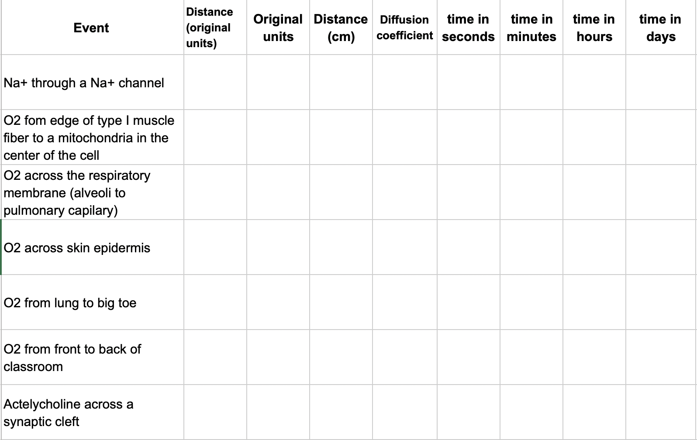

Problem Set 1 Diffusion
Goals: standard curve, scale, google search
What is the epected time of diffusion of different molecules at different scales?. The approximate expected time (t) is a function of the distance (x) and the diffusion coefficient (D) and is given by the approximation
\[\begin{equation} t \approx \frac{x^2}{2D} \end{equation}\]1.1 Problems
1.1.1 Compute diffusion times for chemicals with known diffusion coefficients
Create a table in your sheet that looks like this:

The first column lists diffusion “events”, for example, the diffusion of a sodium ion (Na\(^+\)) through a Na\(^+\) channel. Use Google search to find the distance traveled by the chemical in each event. Use this distance, the molecular weight of the molecule (see the table below), and the function above to compute the approximate time for transport of this molecule across this distance via diffusion. Compute this time in seconds, minutes, hours, and days. See Problem 2 below for actylcholine.
Spreadsheet best practices that must be followed to receive full points;
Use functions for all math; that is, don’t do the math in your head or on a calculator and input the result. Do the math in the spreadsheet. The reason for doing the math in this worksheet is that this is good practice. If we do math on a calculator and then insert the result here, we have no record of the computation. Having a record of all computations is a best practice for reproducible science.
Keep cells with numeric values (such as the diffusion distance) numeric. For example, do not add units to the diffusion distance in the cell containing the numeric value. If the diffusion distance is 1 meter, enter “1” into the cell and not “1 meter”. The reason is, you can’t do math on words (that is, the value in the cell won’t work in simple equations). But, it is good to record the units so add these to the adjacent column (Original units).
Figure 1.1: Molecular weights of common biological molecules
1.1.2 Compute diffusion time for a chemical with an unknown diffusion coefficient
Diffusion data for acetylcholine is not given in the table above. You might be able to find the coefficient with a google search but I want you to use the table of above to 1) generate a standard curve and 2) use the generated curve to estimate the diffusion coefficient for acetylcholine. Remember that diffusion is a function of the size of the molecule – bigger molecules diffuse more slowly. In other words, the diffusion coefficient gets smaller as the size of the molecule gets bigger. Use the table above to create a standard curve, which shows the relationship between known X and known Y. Standard curves are everywhere in science research and recognizing that you can solve a problem, without asking for help, by generating a standard curve will make your future boss very happy. So, instead of trying to look up the diffusion coefficient of acetylcholine, look up its molecular weight with a quick google search (or test your chemical skills and compute its weight using acetylcholine’s chemical formula) and compute its expected (or predicted value) given the standard curve.
In a traditional standard curve done on graph paper, one can predict the expected value of Y (which has not been directly measured) from the known value of X. Here, I want you to do this by generating the mapping function (a function that maps a value of X to a value of Y)
\[\begin{equation} D = b_0 + b_1 MW \end{equation}\]which is the equation for a line (recognize how it is simply Y = mX + b with b and mX re-arranged?) so \(b_0\) is the intercept and \(b_1\) is the slope. Use the data in the table to estimate the slope and intercept of the mapping function and then use this slope and intercept to compute the estimated diffusion coefficient for acetylcholine. When computing the slope and intercept, temember that we want to predict D from MW.
- log transform the weights and the diffusion coefficients– this will make the relationship between the two linear.
- plot log(D) on the Y-axis aganst log(MW) on the X-axis. Show the “trend line”, also called the regression line and formula, which gives the slope and intercept
- In seperate cells, use spreadsheet functions (google these) to compute the slope and intercept
- use the equation for the regression line to compute the predicted log(diffusion coefficient) given a the log(molecular weight of acetylcholine). Use the cells with the slope and intercept in this function. ** Do not hardcode the slope and intercept in your formula **.
- back transform the answer to get the right units (not log units) - the back-transformation is the inverse or anti-log. Make sure you know the base for the log function that you are using!